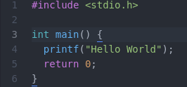

SOPHIA
*
Se presentan ante ti memorias de un desconocido.18 Apr 2021 - Grimpoteuthis
Este lenguaje de alto nivel fue desarrollado inicialmente en Bell Labs de AT&T por Dennish Ritchie entre 1969 y 1973, la justificación de este lenguaje se encuentra íntimamente ligada con el sistema operativo UNIX (escrito en ensamblador), ya que C pasaría a reescribir este sistema operativo.
— — Creación de un programa
Es necesario definir superficialmente los siguientes conceptos: Un compilador es un programa que se encarga de traducir el código fuente de un lenguaje a otro, para lograr su objetivo es necesario un trabajo en conjunto con otros programas. Se describe el siguiente caso, el compilador recibe el código fuente de un lenguaje de alto nivel y lo traduce a otro de bajo nivel (código ensamblador o máquina), el resultado es llamado objeto.
— Proceso de Compilación C
El archivo que contiene el código fuente escrito en C deberá poseer la extensión *.c.
Preprocesador (Preprocessor): realizan tareas como la inclusión de ficheros, sustituciones de macros y eliminación de comentarios, produciendo la entrada para el compilador; el preprocesador genera un archivo con extensión *.i.
Compilador: Este genera un archivo en lenguaje ensamblador con extensión *.s.
Ensamblador (Assembler/Assembly): Genera el objeto que será utilizado por el linker con extensión *.o.
Enlazador (Linker): Recibe el objeto (.o) generado y construye el objeto final enlazando las cabeceras (.h) y librerías (.a) esenciales para la ejecución del programa. El ejecutable tendrá la extensión *.out.
— Estructura general de programa en C
#include <xx.h>, indica las cabeceras donde se encuentran identificadores, macros, constantes, variables globales, prototipos de funciones, entre otros.#define, declarar identificadores de constantes o macros.Declaracion de variables globales.
Declaracion de prototipos de funciones.
Funcion main.
Ejemplo:
basic.cbas— Datos
Las constantes se refieren a valores fijos e inalterables por el programa, se pueden categorizar de la siguiente forma:
Constantes con punto flotante: Números decimales con punto decimal y/o con exponente.
Constantes de carácter: Equivale a un solo carácter entre comillas simples, cada carácter es equivalente a un número entero descrito en el código ASCII.
Las constantes se pueden declarar con el modificador const o utilizando la directiva
de compilación #define.
Al final de cada constante de cadena de caracteres el compilador inserta un caracter nulo, este puede ser representado con la secuencia de escape (\0), a partir
de esto podemos identificar que el carácter 'H' es diferente de la cadena de caracteres "H", ya que esta última posee el carácter nulo al final ("H\0").
Variables
Estas se declaran de la siguiente forma: tipo_dato nombre_variable;
Se inicializan asignando un valor que corresponda al tipo de dato: tipo_dato nombre_variable = valor;.
Tipos de datos
Los tipos fundamentales que el lenguaje C ofrece se encuentran clasificados de la siguiente forma:
char: Número entero de 8 bits, rango [-128, 127]. También es utilizado para representar caracteres de acuerdo al código ASCII.int: Número entero de 16 o 32 bits (depende del procesador).float: Número con punto flotante, el tamaño es de 32 bits o 4 bytes.double: Número con punto flotante, el tamaño es de 64 bits o 8 bytes.Tipo void: Es empleado para declarar la ausencia de valores en el retorno de una función o para declarar punteros genéricos.
Modificadores Los modificadores permiten cambiar el tamaño de los tipos de datos numéricos.
unsigned: Representa números naturales (Mayor o igual a cero).signed: Representa tanto números positivos como negativos, comportamiento por defecto.long: Permite ampliar el tamaño en bits.short: Indica un tamaño de bits menor.La mejor practica al momento de crear la función main es utilizando como tipo de retorno int y retornando 0 para indicar que ha finalizado correctamente. La principal razón es para evitar problemas con algún compilador.

Ejemplo de calculadora basica:
Última modificación: 08 May 2021